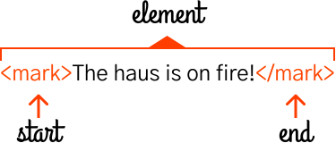
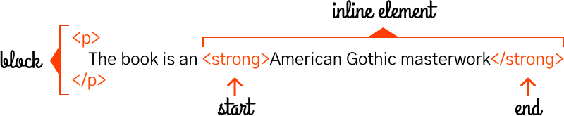
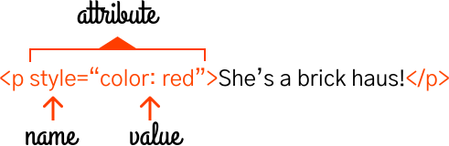

Learn HTML
HTML stands for Hypertext Markup Language. It's called a markup language, because it's a way to mark up regular text to specify structure and meaning. This is similar to how you physically mark up an important passage in a book by highlighting. When you highlight part of a book, you are marking that part as important.
HTML gives you the digital equivalent of a physical highlighter to mark up content. You use HTML on the web to define the structure or 'mark up' the elements of a web page so that they have meaning beyond the text that is displayed. These meanings follow rules and allow you to define your page in different elements. Elements are the building blocks of a website.
Elements
An element is a stand alone or discrete entity in HTML, which is usually denoted by two tags, a start or beginning tag and an ending tag. These tags follow a certain syntax and they encase content to form an element. Here's a diagram of an element:
 with start tag and end tag" height="160">In HTML, the <mark> tag is short for marked and browsers usually render it as highlighted text. Similar to the real world, marking something means you are referencing it or notating it for relevance or importance. The tag above would appear like:
The haus is on fire!
Another way to refer to the start of the element is as an opening tag, <mark>, and a closing tag, </mark>. Notice that the closing tag has a slash in it? This is standard HTML syntax, and you'll see that for all elements with a starting or opening <tagname>, and an ending or closing </tagname>, they will follow this pattern. In our haus metaphor, you can think of this kind of element as being the first brick or building material. The slash "/" in the closing tag is the mortar that seals the element, completing it and holding it in place.
Build to Learn
Before we go any further, as a part of active learning it's important to do exercises and practice, as well as read and comprehend. Actively exercising the new knowledge you just learned is what will actually ingrain that knowledge in your brain, making it accessible to you later on. For that reason, for every HTML element and new concept we learn, I highly recommend you type out the HTML. You can copy and paste the sample I provide, but typing it will help your retention. You will learn through this tutorial, but you should also build a sample page to go along with your learning. Build as you learn.
Basic Template
You don't need to understand all of this markup to use the template below, but it will help you get started faster.
Save the file as index.html and open it in your browser of choice. You should see your sample page!
You already learned that elements start with one tag and end with another closing tag. As you can see above there are a lot of elements, including one called body. For now, all you need to focus on is that space between the body opening and closing tags. That will be your playground. As you go through parts of this tutorial, I will provide sample HTML for you. Feel free to transpose it manually by typing it between these tags and make sure you take the time to make it your own. Play around, customize your HTML, make it fun. This part is really important. Here are some ideas on pages you could build:
- Synopsis of your favorite book
- Article dedicated to a band
- Personal biographical page
Choose a project, and as you learn HTML, utilize your new skills to build your own page. It will help the knowledge stick.
Text Content
The <mark> tag above helps us describe text content. Remember that websites started as pages or documents, and text today is just as much a fundamental part of HTML and websites as it was in the early web. You can denote text in two ways:
- By creating a new paragraph or block of text
- By adding meaning to text in the same line
Block Elements
Creating a new paragraph means visually forming a new block on the page. This is no different than hitting enter/return in your favorite text editor and starting to type. These sorts of elements are referred to as block elements, because they represent structure and they create visual blocks. Truth be told, I think these should probably be the bricks you use to start building. The most common textual block element or brick is the paragraph element. You're reading one right now!
I lied before because the p tag should really be the first building block in your world of new materials. See how the p tag is creating a new visual block right here, in this very paragraph, which is separate and apart from the image above and the next paragraph below? That's the purpose of this block level type of element.
All right, so you've learned how to start stacking bricks in the form of paragraphs, using the <p> tag, but what holds bricks in place? How do you give your house an underlying structure? You're going to need a wooden frame. You need headings.
Headings
Headings serve as your framework, your wood, the sturdy dividers that the rest of your HTML haus can be built inside of and around. Headings create new blocks of text, visually separate from surrounding elements, also making them block elements. Can you guess what the 1st heading might be for?
Every page in HTML should have at least one heading, called an <h1> that provides the title or main subject for that page. After the h1, the rest of the headings flow down in a hierarchy, denoting the relative relationship between subordinate or nested content. Headings allow you to see the same structure you'd experience in a table of contents. Browsers will render headings by default as larger text, heavier (bolder) in appearance, and in a range starting from the largest, h1, and reducing down to the smallest, h6. Here's what all the headings from 1-6 look like on this website:
h1
h2
h3
h4
h5
h6
It's important to remember that these headings are hierarchical, so it doesn't make any sense to represent a related subordinate idea (<h3>) above a superior heading (<h2>) that is higher in the hiearchy. Here's an example:
The Fall of the House of Usher
Background
Publication History
The Fall of the House of Usher by Edgar Allan Poe was originally published in Burton's Gentleman's Magazine and American Monthly Review in 1839. Poe later republished the Gothic narrative in a collection of short stories called Tales of the Grotesque and Arabesque in 1840.
Critical Acclaim
The short story is a tale of haunting tone that relies on an unnamed narrator to convey a sense of unsettled fear. It is largely regarded as an American Gothic masterwork. In its time, it was criticized for being too formulaic, relying on similar themes and structures as some of Poe's earlier work. However, it also influenced later works of literature such as the character Captain Ahab in Herman Melville's Moby-Dick (1851).
Story
DURING the whole of a dull, dark, and soundless day in the autumn of the year, when the clouds hung oppressively low in the heavens, I had been passing alone, on horseback, through a singularly dreary tract of country; and at length found myself, as the shades of the evening drew on, within view of the melancholy House of Usher. I know not how it was--but, with the first glimpse of the building, a sense of insufferable gloom pervaded my spirit. I say insufferable; for the feeling was unrelieved by any of that half-pleasurable, because poetic, sentiment, with which the mind usually receives even the sternest natural images of the desolate or terrible. I looked upon the scene before me--upon the mere house, and the simple landscape features of the domain--upon the bleak walls--upon the vacant eye-like windows--upon a few rank sedges--and upon a few white trunks of decayed trees--with an utter depression of soul which I can compare to no earthly sensation more properly than to the after-dream of the reveller upon opium--the bitter lapse into everyday life--the hideous dropping off of the veil...
The example above shows the way we categorize and compartmentalize information following a hierarchy. The title of the story is the <h1>, the sections of the book are captured as <h2>, because they are subordinate to the h1 and they help separate the editor's background information from the actual story itself. And then finally, even within the Background section, there's <h3> elements to denote subsections of the Background: Publication History and Critical Acclaim. All of these headings help communicate how ideas are related. They serve as the wooden frame, defining the structure of your content.
Inline Elements
In the House of Usher example above, you probably noticed that certain text appear in italics and other text appears in bold. You were introduced to this idea earlier with the <mark> tag, but we should circle back on why you use these elements now. Adding meaning to text in the same line means adding additional meaning through tags to emphasize text, mark importance, or notate references. These are less like bricks and more like your paint or lights, the parts of your haus that draw attention to certain elements and add extra meaning to your basic text. You probably also noticed that even though we are using elements in the text above, they're not creating new blocks like a <p> or <h#> tag might. That's because they're inline elements. Inline elements only effect text in the same line and do not alter the visual flow of the page or document.
The book is an American Gothic masterwork
You might notice that in our diagram the <p> tag is on different lines, while in the HTML above, the <p> tags are on the same line. That's because HTML ignores white space found outside of tags. Since the <p> element informs structure as well as meaning, you can add linebreaks between blocks of text in HTML and only a new set of <p> tags (or another block element) will actually render as a new line on the website's page. It makes it much easier to read HTML if you wrap the tag around the content and indent it properly, as the diagram shows above. This is particulary useful for long paragraphs of text.
So far you've learned a handful of inline elements, which you can use to mark up your text with additional meaning:
- <mark> stands for marked and is used to notate importance in text and it typically displays as highlighted text
- <em> stands for emphasis and is used to add stress to a passage and typically displays as italicized text
- <strong> is used to to indicate strong importance, seriousness, or urgency and usually displays as bold text
Of course to really use your paint and hang your lights, you need to understand the rules around nesting elements.
Nesting
You're learning the tools you need to build your own beautiful haus out of HTML. So far you've learned about the bricks, the building blocks of any webpage, which are the block level text elements such as headings and paragraphs. You've also learned inline text elements as well, such as mark, emphasis, and importance. By combining these elements or materials, you can start to tell your own stories, to build a durable, digital House of Usher. You've probably already figured this out, but you can compose elements together by nesting them. It's important to close nested tags in order though. Here's what I mean:
Luther Vandross was a talent, possessing The Velvet Voice and supporting lead singers across four decades.
When you nest an inline element like emphasis inside of another element like a paragraph, you have to make sure you close your emphasis tag before the paragraph tag. This simple rule will save you a lot of trouble and is worth remembering, as you'll be using elements together and nesting them often. Speaking of The Velvet Voice and soul music, it's important to also understand why you use tags like emphasis and how they change the meaning of a page beyond just the visual appearance.
Semantic HTML
In soul music, there are ideas being communicated through the song that are beyond the simple words of the lyrics. Semantic HTML is a lot like that, because certain tags are used to identify content with an additional layer of meaning associated to it. Here's a formal definition from Wikipedia:
Semantic HTML is the use of HTML markup to reinforce the semantics, or meaning, of the information in webpages and web applications rather than merely to define its presentation or look. Semantic HTML is processed by traditional web browsers as well as by many other user agents.
Two examples you've already learned are the emphasis <em> and strong <strong> tags. The <strong> tag results in a visual difference, making the text it surrounds bold, but it also indicates that the text is also important. Why does this matter?
The extra meaning added by the strong tag matters because of that last phrase above in the formal definition: Semantic HTML is processed by... many other user agents. One example of a user agent might be in a browser, whereby you're visually experiencing the content. However, other examples of user agents reading your webpage might come in the form of visually impaired people experiencing your webpage without a browser, instead through a screen reader; or even beyond people, computer programs like search engines will be reading your webpage and determining what is important about it (or not). In either case, by using the proper tags you convey semantic meaning about your house, which makes it easier for all users to consume your content.
Accessibility
Using proper Semantic HTML is closely related to the concept of accessibility and universal design. Universal design in building is the idea that all people should have equal access to a building, regardless of their level of mobility. That's why buildings have ramps for people in wheelchairs. The same is true for our digital world on the web. Any user, regardless of their situation, should have the same ease of access to your website as any other user. This includes users that are visually impaired and might use a screen reader or users that are hearing impaired and will need to read the captions on a video embedded in your site.

You've learned how to write a story. You can build a basic house using HTML, and now you understand why it's important to build that house for everyone. Let's start learning about how we might decorate our house, connect the rooms with doors and hallways, and give the place some character. I'm talking about HTML attributes.
Attributes
An HTML attribute is an extra characteristic that you can add to a basic HTML tag which will enrich it with additional information about the tag. There are a few rules to follow when you're adding attributes to your HTML tags:
- Attributes are always specified in the start or opening tag
- Attributes generally come in a pair of two: a name and a value
Here's a visual example showing an attribute called style which you can use to change how your element is displayed.
And here's how the actual HTML looks:
She's a brick haus!
Color is a style property that defines a text element's font color. Red is a standard color defined in browsers. Combining the two on a <p> tag, we get a red paragraph. I know we promised this tutorial would be only about HTML, but you've actually just learned a little CSS as well. CSS stands for Cascading Style Sheets, and if HTML is how you define structure and content with elements, then CSS is how you style an element's appearance and how each element displays in the browser. I know that's a lot, so don't worry about CSS right now. We'll work on that later.
We're going to stick to HTML for now, but if you need a break, here's a link to a song to help you relax: Brick House.
Links
Speaking of links, a link (or hyperlink) is how you can define a door to another webpage. So far you've learned everything you need to build an HTML haus, but you're going to want to link your houses together. The link in the last paragraph is one of those doorways and it's defined by using an HTML attribute called href, which stands for hypertext reference. The href attribute is applied to an HTML element called an anchor tag <a>. It's a hypertext reference because it's referring to another piece of HTML.
As you can see, the href attribute has a value of "https://www.youtube.com/watch?v=rrBx6mAWYPU" which is the address to another website. It is applied inside of the opening <a> tag, and between the two tags, you see the text that has been marked up "Brick House". This is no different than using the <mark> tag, except this creates a link instead of a highlight. It's standard for browsers to display links as underlined text, which is how anchor tags usually render.
For building your own website, you can link to another .html page on your computer by referencing it. It doesn't have to be on the internet. Your reference will follow the structure of your computer's file folders. Sometimes it's easier to see this with an example.
Do you see how the link above doesn't have an https:// in it? That's because it's a local reference to a file. Your site isn't on the internet yet; https is a protocol that the internet uses called Hypertext Transfer Protocol. I bet you can guess what it does!
For the example above to work, it's important that you have saved both index.html and about.html in the same file folder!
Images
Similar to anchor tags, the <img> tag stands for image and it references the location of an image. When you use this tag, it references the image's location and then your browser displays it for you to see. Instead of using the href attribute though, the img element uses the src or source attribute.
The src="img/red-house-150.jpg" is referencing a file in relation to where my current HTML page that references the image is located. In this case, it's inside of a subfolder which is named "img" and the image is named "red-house-150.jpg". I was referencing an image on my computer, but you can also reference images on the internet by using their exact location. If you want to try, you can use the following address on your own HTML page: "https://html.haus/img/red-house-150.jpg"

You may have noticed another attribute attached to each of these images. Images have two required attributes: the src attribute and the alt attribute. The alt attribute is for alternate text and it should be a meaningful description of the image.
Remember all those different users and user agents?
Alt text is there for visually impaired users who rely on a screen reader to experience your webpage. Even though they can't see the image, they still need to be able to experience your page as if they could. Their screen reader will read the description you provide in your alternate text, so make sure you write a meaningful description there. Also, screen readers already know that it's an image, so there's no need to ever write "Photo of" or "Image of" in your alternate text. This is duplicative.
Self Closing Tags
You probably noticed that there's another peculiar thing about img tags. They don't have an ending or closing tag! There's no such thing as a closing </img> tag, in fact it's bad HTML. That's because certain elements don't need a closing tag, because they stand alone without having to encompass anything else. In an image's case, there's nothing for the image to wrap around, because the image itself is the element. The extra ending tag wouldn't be useful. That's why it's a self closing tag.
Hanging the Roof
It's time to revisit where we started, bring it all together, and put the roof on your HTML haus.
At the beginning of this tutorial, I shared a template without explaining it. I wanted to get you into building HTML as fast as I could, so we skipped a few basic parts. Before you finish, it's important to understand them.
All HTML documents are wrapped in a parent <html> tag. Inside of the HTML element, there are two essential components:
- head
- body
The head element contains information about the document or page that is important for your computer's browser (and other user agents, such as search engines), but is not displayed to you visually as part of the page. As an example in the head tag above, there's a title element, which defines the text that appears in your browser's tab, giving a title to your page. There are many more elements that can go in the head, but title is the first one you should learn.
The body element contains your actual page, and it's what you've been working in this entire time. HTML demands and requires that the body element follow the head and that the entire content of your webpage is captured inside the body.
I like to think of the <head> as being the the attic of your HTML house, where important things like ducts, wiring, and air conditioning units live, except in HTML these things are the title of your page, links to CSS styles, or maybe even metadata about your website. You never see what is in the attic, but the roof of the house is supported by the attic, so it still serves a very important purpose. Similarly, the body is the house itself, the part you experience as the user.
Metadata
Metadata in HTML can help you describe the author of the webpage or the description that should appear in search results. Think of this as additional information that other user agents might need in order to process, categorize, or understand your page correctly. Without delving too deeply into this, I recommend you read through the conclusion and then check out the References section for a peek into all the possibilities.
Conclusion
You've just learned a whole heap of HTML. Actually, you've learned everything you need to recreate this tutorial yourself. You can go out and build your own site now. Here's what you learned by completing this one page tutorial:
- What an HTML element is
- Different kinds of elements: block vs. inline
- How to structure text content using headings and paragraphs
- What Semantic HTML means and why you should write it
- The importance of universal design and accessibility
- What HTML attributes are and how they enrich elements
- How to create doorways to other pages using links
- How to hang pictures on your walls using images
In order to really absorb and retain this information, I recommend you follow a cycle of first learn, then build, and finally teach. Building this website, HTML.Haus, was part of my own study to learn HTML5 and fulfill the teach part of my cycle. Take the concepts you've learned today and tell your own story by building a webpage. The internet needs you. We need you.
You can copy and paste this into a text editor and save the file as index.html. Loading that file in a browser shows your page!
Next Steps
Of course, there's a lot more to learn after this. You learned how to build a house today, but you can build veritable castles out of HTML. There are big parts of HTML that this introductory tutorial didn't cover, such as forms and tables, interactive elements, and metadata. To keep learning these additional areas, check out these other sections: